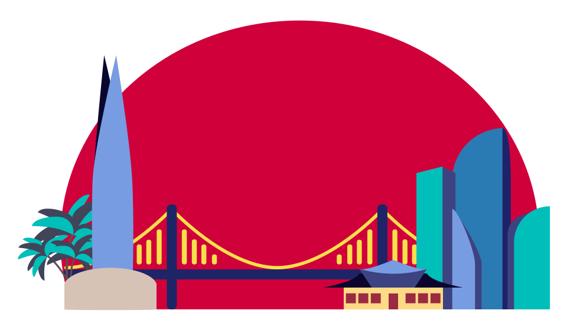

welkome to korea guide
seoul
is a city with a lot of history, as the capital has been settled over 2000 years and experienced a lot of warfare. During the Japanese colonisation in the 20th century, the name of the city was changed to Gyeongseong. During the colonisation, palaces were destroyed and the Korean culture was almost swept away. In 1945 Korea became independent and they changed back to the original name. Luckily, the Korean culture survived.
When the city opened up to the outside world in the late 19th century it was the first Korean city to have railways and telephones. Since the 1960s, it industrialised quickly and it has become an economic giant center.
Seoul is one of the larges cities in the world, and has over ten million citizens. It is certainly an impressive city, with towering skyscrapers, modern architecture and lots of shopping possibilities. But in Seoul you can also find many artistic attractions, traditional palaces and temples, right in the city center.
busan
Bursting with mountains and beaches, hot springs and seafood, South Korea’s second-largest city is a rollicking port town with tonnes to offer. From casual tent bars and chic designer cafes to fish markets teeming with every species imaginable, Busan has something for all tastes. Rugged mountain ranges criss-crossing the city define the urban landscape, while events such as the Busan International Film Festival underscore the city’s desire to be a global meeting place. Note that Busan is within the boundaries of Gyeongsangnam-do but is a separate administrative unit with its own telephone area code.
jeju
Just off the coast of South Korea, Jeju Island pulls in vacationers and honeymooners by the thousands. Even if you haven't just gotten married, a vacation here sure can feel like it.
Regular direct flights to and from international cities such as Tokyo, Osaka, Beijing and Shanghai (as well as South Korea's domestic airports) and liberal visa requirements also make getting here a snap.
Jeju Island features a volcanic Hallasan commanding the island from the center, a 224-kilometer semi-tropical forested national park, a wild coastline dotted with waterfalls and the longest lava tube in the world.
tips for trip
-
First things first, you need to get yourself a T-money card. This is a transportation card that will give you access to Seoul’s buses and metro system. It’s better to get a card instead of paying per ride, because it makes your fare cheaper and you end up saving quite a bit in the long run. You can pick these up at any metro station or at a convenience store like GS25, CU, 7-Eleven, Mini Stop, With Me, and Buy The Way.
-
The cool thing about the Seoul Metropolitan Subway system is that the network doesn’t just cover Seoul; it’s so spread out that it reaches Incheon, the Gyeonggi province, the Chungnam province, and the Gangwon province. You could potentially cover a lot of ground just using the metro, and you also have express lines to get you further faster. Don’t forget to return your T-money card at the end of your visit for a refund on the balance and the cost of the card.
-
Lastly, let’s talk transportation to and from the airport. The most efficient way is the AREX (Airport Railroad), which has an Express Train and an All Stop Train. The All Stop Train is cheaper and it only takes a few more minutes to get into Seoul, so I don’t find it a significant enough difference to pay extra.

-
Grand Palaces – 10,000 won for 5 sites There are 5 Grand Palaces in Seoul: Changdeokgung, Changgyeonggung, Deoksugung, Gyeongbokgung and Gyeonghuigung. You can either pay for individual admission tickets, or you can pay 10,000 won for a pass, which will give you access to the first four palaces (the fifth one is already free) as well as the Jongmyo Shrine. That’s cheaper than paying to visit each palace individually, and you don’t have to see everything on the same day.
-
Jogyesa Temple – FREE This is a Buddhist temple located in Jongno, which puts it in walking distance of many of the Grand Palaces. My favourite time of year to visit is for Buddha’s birthday when the entire temple is covered in colourful paper lanterns.
-
Namsangol Hanok Village – FREE This is a village where hanok (traditional Korean houses) have been preserved to showcase what the area would have looked like in centuries past. This was once the site of a Joseon-era summer resort, so it feels quite peaceful even though you can see modern structures off in the distance.

-
Han River is a great place to visit on the weekends. If the weather is nice, this is where people come to picnic for the day with tents in tow. My favourite stretch of waterfront is along Yeouido, where you can rent bikes, watch teenagers longboard like pros, take out paddle boats and more.
-
Seoul Forest has some beautiful tree-lined paths and it’s a great little escape from the city. The area was once used as the royal hunting grounds, but thankfully these days there’s a greater focus on animal conservation so you can see deer and even feed them.
-
Seonyudo Park is an island in the middle of the Han River that was once home to a water filtration plant. The entire place has been turned into an ecological park, while still retaining a bit of an industrial feel, so it’s a pretty cool place to wander around. To reach the park you’ll either have to cross Yanghwadaegyo Bridge from Hapjeong in the north or Yeouido in the south.